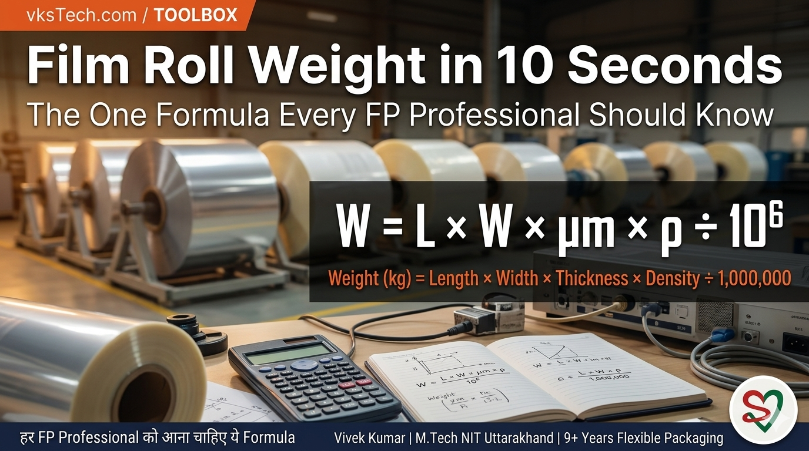
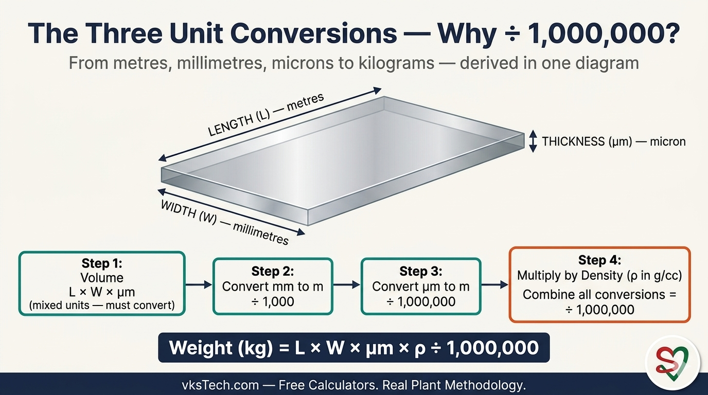
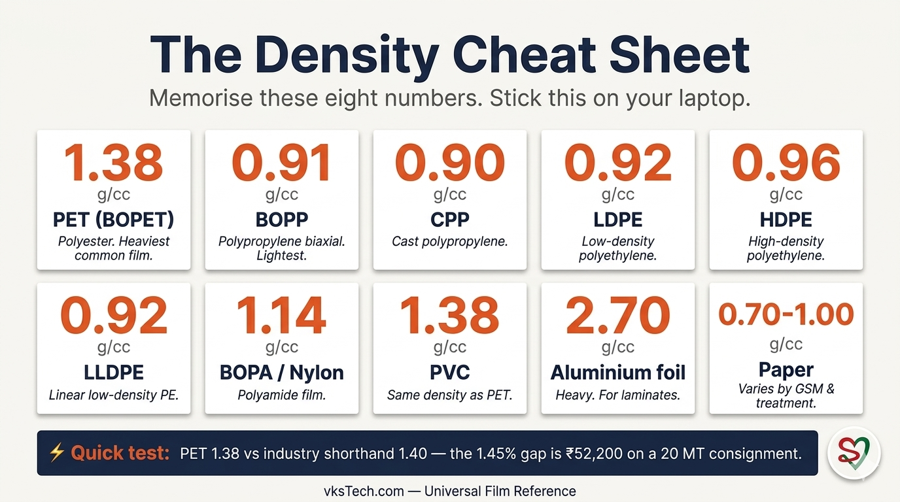
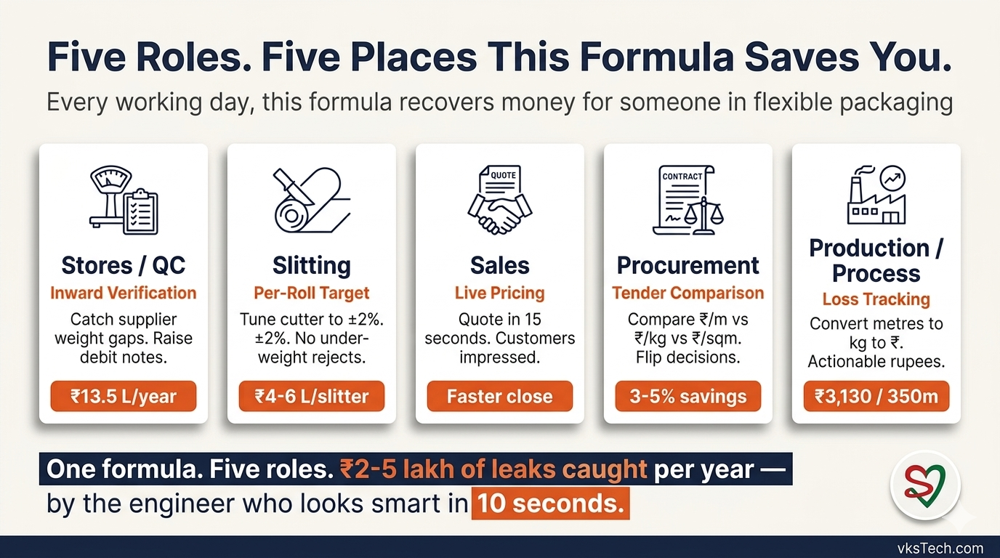
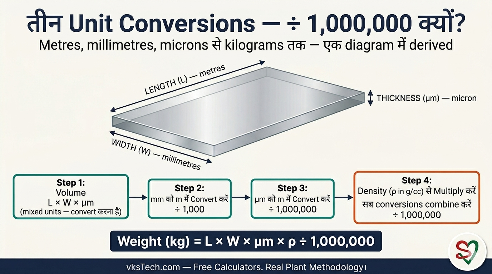
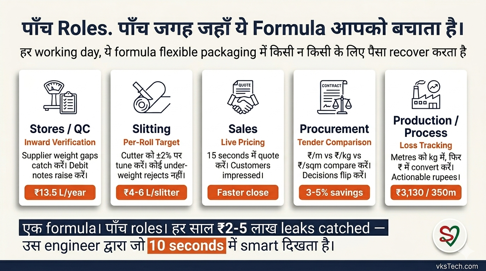

⚖️ Film Roll Weight in 10 Seconds — The Formula That Makes You Look Smart
📖 12-min read | Universal Reference Tool | Published April 2026 | Bookmark this page
Walk into any meeting at a flexible packaging plant. Someone says "we have 2,500 kg of stock at 12 mic spec." Half the room nods politely. The other half mentally converts: at 3000mm width, 1.38 g/cc PET, that's about 50,300 metres — enough for 30 customer orders this week. The second group looks smart. The first group is at the mercy of whoever speaks first.
This is the formula that separates the two groups. It is the single most useful piece of arithmetic in flexible packaging — used by Stores, QC, Production, Slitting, Sales, and Procurement, every working day. Once it lives in your head, you stop being surprised by numbers other people throw around. You start catching the leaks they miss.
This blog is the formula, the cheat sheet of densities, six worked examples, all four rearrangements (solve for Weight, Length, Width, or Thickness), and a built-in calculator at the end. Twelve minutes. You'll never need to ask "how many kg in this roll" — or any related question — again.
- Standard PET jumbo (54000m × 3000mm × 12μm): 2,683 kg
- Standard BOPP jumbo (50000m × 3000mm × 20μm): 2,730 kg
- Slit roll (5000m × 200mm × 12μm PET): 16.56 kg
- Catch a 1.5% supplier weight gap on a 20 MT consignment: ₹2.19 lakh recovered
- Time to do this calculation in your head with practice: under 10 seconds
- Cost to learn this: the next 12 minutes
📐 The Formula — One Line, Three Unit Conversions
Here it is. Memorise this one line and you have the entire blog in your pocket:
That divisor of 1,000,000 looks scary. It is not. It is just three unit conversions stacked together, because the inputs use three different units (metres, millimetres, microns) and the output is in kilograms. Let me walk you through where it comes from — once you see it, you never forget it:

- Volume of the film = Length × Width × Thickness. If everything is in metres, volume is in cubic metres. But your length is in m, width is in mm, and thickness is in micron — so we have to convert.
- Convert width: mm to m → divide by 1,000
- Convert thickness: micron to m → divide by 1,000,000
- Multiply by density (g/cc converts cleanly because 1 g/cc = 1,000 kg/m³, and the kg/m³ cancels with cubic metres to give kg)
Stack those conversions: 1,000 × 1,000,000 ÷ 1,000 = 1,000,000. That is the divisor. So the formula simplifies to: multiply L, W, μm, ρ — divide by one million. Done.
📊 The Density Cheat Sheet — Memorise These Eight Numbers
The whole formula stands on density. Get the density wrong and your entire calculation is wrong. Here are the densities every FP professional should have in their head — same values used by the calculators on vksTech.com:

| Film type | Density (g/cc) | Memory hook |
|---|---|---|
| PET (BOPET) | 1.38 | Polyester — heaviest common film. "One-three-eight" |
| BOPP | 0.91 | Polypropylene biaxially oriented — lightest. "Nine-one" |
| CPP | 0.90 | Cast polypropylene — slightly lighter than BOPP. "Nine-zero" |
| LDPE | 0.92 | Low-density polyethylene. "Nine-two" |
| HDPE | 0.96 | High-density polyethylene. "Nine-six" |
| LLDPE | 0.92 | Linear low-density PE. Same as LDPE for our math. |
| BOPA / Nylon | 1.14 | Polyamide — between PE family and PET. |
| PVC | 1.38 | Same density as PET — different chemistry, same maths. |
| Aluminium foil | 2.70 | Heavy. Comes up in laminate calculations. |
| Paper | 0.70 – 1.00 | Varies hugely by GSM and treatment. |
🧮 Four Worked Examples — From Routine to Procurement Catch
Example 1 — A Standard PET Jumbo
You receive a fresh PET jumbo. Spec on the sticker: 54,000 m × 3000 mm × 12 micron PET. What should it weigh?
= 2,683 kg
If the supplier invoices anything significantly above 2,683 kg for this spec, raise it. If significantly below, also raise it — they may be giving you less metres than declared.
Example 2 — A BOPP Jumbo
BOPP plant sends a jumbo: 50,000 m × 3000 mm × 20 micron BOPP. Density 0.91.
= 2,730 kg
Notice — the BOPP jumbo is bigger in microns (20 vs 12 PET) but only marginally heavier (2,730 vs 2,683). This is because BOPP is much lighter density (0.91 vs 1.38). Forgetting this is the #1 reason engineers misjudge BOPP plant outputs against PET plant outputs.
Example 3 — A Slit Roll for a Customer
Customer ordered a slit roll: 5,000 m × 200 mm × 12 micron PET. What should the slitter operator's weighbridge show?
= 16.56 kg
Now if the slitter operator's actual weighbridge reading is 17.2 kg or 15.9 kg, you instantly know something is off — either length is wrong, or there is a mix-up in width, or the core weight wasn't deducted. The number itself tells you to investigate.
Example 4 — Catching a Supplier ₹2.19 Lakh Leak
Procurement sends you a supplier invoice. It says: "20 MT, 7 jumbos, 12 micron PET, 3000mm width, 54,000m each". Sounds reasonable. You do the formula in 10 seconds:
7 jumbos = 7 × 2,683 = 18,779 kg
The invoice claims 20,000 kg. Your formula says 18,779 kg. You are short by 1,221 kg = ₹2.19 lakh at ₹180/kg. Either the supplier overstated weight, understated metres per jumbo, or the consignment has a bonus 8th jumbo somewhere. Either way, you've earned a debit note in 10 seconds.
This is the moment that turns you from "the engineer in the meeting" into "the engineer who catches things." It is also the moment that links directly back to Blog 26's Source 1 — the Inward Gap. Without this formula, Format 1 (Inward Inspection Log) cannot identify a discrepancy. This is the formula that makes Format 1 work.
🔄 All Four Rearrangements — One Formula, Four Faces
Here is the most useful trick: the same formula rearranges to solve for any of the four variables. If you know three, you can always find the fourth. This is what turns a "weight formula" into a complete toolkit.
Pattern recognition: to solve for any variable, divide Weight × 1,000,000 by the product of the other three. One trick, four answers.
Example 5 — Length from Weight (the customer call)
A customer says "I need 1,500 kg of 12 micron PET, 1500mm wide." How many metres do you slit?
= 1,500,000,000 ÷ 24,840
= 60,386 m
You quote them — "1,500 kg means about 60,400 metres of slit roll. We can deliver that in 4 master rolls." Customer impressed. Sales closed in two minutes.
Example 6 — Width from Weight (the slitting QC catch)
A slit roll comes off the slitter. Customer order spec: 5,000 m × 200 mm × 12 micron PET. Expected weight: 16.56 kg. The actual weighbridge shows 16.50 kg — close, but not exact. Length and thickness are confirmed correct on the slitter readout. What width was actually slit?
= 16,500,000 ÷ 82,800
= 199.3 mm
The slitter cut at 199.3mm instead of 200mm — a 0.7mm shortfall. On a 5,000m roll that's 60g. On a 3,000-roll month, that is 180 kg of unbilled film at ₹180/kg = ₹32,400/month walking out the door because the slitter blade is set wrong. The formula caught it. Without this rearrangement, you would have written off the 60g as "weighbridge tolerance" and never investigated.
Example 7 — Thickness from Weight (the under-gauging audit)
Supplier sends a PET jumbo invoiced as 54,000 m × 3,000 mm × 12 micron. Plant weighbridge reads 2,550 kg. Expected at spec was 2,683 kg (Example 1). Length is confirmed correct on the unwinder counter. Width is confirmed at 3,000mm. What thickness did they actually deliver?
= 2,550,000,000 ÷ 223,560,000
= 11.41 micron
Supplier billed for 12 micron, delivered 11.41 micron — a 4.9% under-gauge. On this jumbo: 133 kg short = ₹23,940 at ₹180/kg. On a yearly contract of 250 MT, that's ₹22 lakh/year walking into the supplier's bank account because nobody opened a calculator. Now you have a number that goes into a debit note or a contract renegotiation — your choice.
Examples 6 and 7 are why this formula is not a "weight tool." It is a full QC and procurement audit tool. Three sides of the equation pin down the fourth — every time.
🎯 Five Roles, Five Places This Formula Saves You

1. Stores / QC — Inward verification. You weigh the consignment, calculate what it should weigh from supplier's declared length × width × micron, and raise debit notes when the gap exceeds 0.5%. This is Source 1 from Blog 26 in action. Annual recovery: ₹13.5 lakh on a 250 MT/month plant.
2. Slitting — Per-roll target weight. Slitter operator gets a customer order spec. You hand them the target weight per slit roll. They tune cutter setup to hit that weight ±2%. No more under-weight rejects, no more over-weight giveaways. Annual recovery: ₹4-6 lakh per slitter.
3. Sales — Live customer pricing. Customer asks "how many metres in 2 MT of 12 mic PET 1200mm?" You answer in 15 seconds: "About 100,700 metres." You quote price. Customer is impressed by speed and confidence. Conversion rate goes up. Lead time on quotes drops from 1 day to 1 minute.
4. Procurement — Tender comparison. Three suppliers quote on 20 MT of 12 mic PET, 3000mm. Each quotes price per metre but actually delivers different metres per jumbo (52,000 / 54,000 / 53,500). You convert all three to ₹/kg and ₹/sqm using the formula. The cheapest per-metre supplier is suddenly the most expensive per-kg. Procurement decision flips. Savings: 3-5% on every consignment.
5. Production / Process Engineering — Loss tracking. Operator says "we lost 350 metres at start-up." You instantly convert to kg using the per-metre formula (3000 × 12 × 1.38 / 1000 = 0.0497 kg/m). 350m × 0.0497 = 17.4 kg. At ₹180/kg = ₹3,130 lost. This is how the per-jumbo Format 3 from Blog 26 turns metres into actionable rupees.
⚠️ Three Mistakes Engineers Make With This Formula
Mistake 1 — Forgetting the unit conversions. "I'll just multiply length × width × thickness × density." Without the divisor of 1,000,000 your answer is off by a factor of a million. The most common form of this mistake is forgetting to convert width from mm to m, then realising the answer doesn't look right and panicking. The fix: always write the formula with the divisor on the side. ÷ 1,000,000 is non-negotiable.
Mistake 2 — Using the wrong density. Confusing PET density with BOPP density on a multilayer laminate calculation. Using 1.40 (industry shorthand) when site convention is 1.38. Forgetting that LDPE (0.92) and HDPE (0.96) are different. The fix: the density cheat sheet above. Print it, stick it on your laptop, refer to it until it lives in your head.
Mistake 3 — Confusing GSM and total weight. GSM (grams per square metre) is per-area, not per-length. GSM = micron × density (g/cc). For 12 micron PET, GSM = 12 × 1.38 = 16.56 g/sqm. To get total weight from GSM, you multiply by area in square metres (length × width), not by length alone. The fix: remember that GSM × area = weight, but micron × volume × density = weight. Two different tools for two different problems.
💰 Live Calculator — Try the Formula Right Here
Edit any input below. The calculator runs the formula live. Switch between forward (calculate weight from dimensions) and reverse (calculate length from weight) using the toggle at the top.
🧮 More Free Calculators on vksTech.com
This is one of seven free calculators available on vksTech.com — alongside Roll OD, GSM ↔ Micron Conversion, Production Yield %, Machine Utilisation %, and Cost per Square Metre. All free, no email gate, no subscription.
This formula is the foundation under almost every operational improvement in the series:
- Blog #22: Boat-Set SMED — 2017 case study (Lever 2 deep dive)
- Blog #23: Inter-Cycle SMED — 2016 case study (Lever 1 deep dive)
- Blog #24: Metallised Waste 1.8% → 0.9% — operator-discipline playbook
- Blog #25: 2 SMED Levers Hub — strategic overview
- Blog #26: Bare Film Waste 2% → 1% — upstream yield playbook
- This blog (#27): Film Roll Weight Formula — the universal arithmetic (you are here)
- Blog #28 (coming next): Web Break Reduction at Metalliser — Target Zero kg
⚖️ Film Roll Weight 10 Seconds में — वो Formula जो आपको Smart दिखाता है
📖 12-min read | Universal Reference Tool | April 2026 में published | इस page को bookmark करें
किसी भी flexible packaging plant की meeting में जाएँ। कोई कहता है "हमारे पास 12 mic spec पर 2,500 kg stock है।" आधा कमरा politely सिर हिलाता है। दूसरा आधा mentally convert करता है: 3000mm width पर, 1.38 g/cc PET density पर, वो लगभग 50,300 metres है — इस week के 30 customer orders के लिए काफ़ी। दूसरा group smart दिखता है। पहला group जो पहले बोले उसके दया पर है।
यही formula है जो दोनों groups को अलग करता है। ये flexible packaging में सबसे useful arithmetic का एक टुकड़ा है — Stores, QC, Production, Slitting, Sales, और Procurement द्वारा हर working day use होता है। एक बार ये आपके दिमाग़ में बैठ जाए, आप उन numbers से surprise होना बंद कर देते हैं जो दूसरे लोग उछालते हैं। आप उन leaks को catch करना शुरू करते हैं जो वो miss करते हैं।
ये blog formula है, densities का cheat sheet है, छह worked examples हैं, सभी चार rearrangements (Weight, Length, Width, या Thickness solve करें), और end पर built-in calculator है। बारह minutes। आपको फिर कभी पूछना नहीं पड़ेगा "इस roll में कितने kg हैं" — या कोई related question।
- Standard PET जumbo (54000m × 3000mm × 12μm): 2,683 kg
- Standard BOPP जumbo (50000m × 3000mm × 20μm): 2,730 kg
- Slit roll (5000m × 200mm × 12μm PET): 16.56 kg
- 20 MT consignment पर 1.5% supplier weight gap catch करें: ₹2.19 लाख recovered
- Practice के साथ ये calculation दिमाग़ में करने का time: 10 seconds से कम
- ये सीखने का cost: अगले 12 minutes
📐 Formula — एक Line, तीन Unit Conversions
यहाँ है। इस एक line को memorise करें और पूरा blog आपकी जेब में है:
वो 1,000,000 का divisor डरावना लगता है। है नहीं। ये बस तीन unit conversions एक साथ हैं, क्योंकि inputs तीन अलग units (metres, millimetres, microns) में हैं और output kilograms में है। मैं आपको derivation दिखाता हूँ — एक बार दिख जाए, आप कभी नहीं भूलेंगे:

- Film का volume = Length × Width × Thickness। अगर सब कुछ metres में है, volume cubic metres में है। पर आपका length m में है, width mm में है, और thickness micron में है — तो हमें convert करना है।
- Width convert करें: mm से m → 1,000 से divide करें
- Thickness convert करें: micron से m → 1,000,000 से divide करें
- Density से multiply करें (g/cc cleanly convert होता है क्योंकि 1 g/cc = 1,000 kg/m³, और kg/m³ cubic metres के साथ cancel होकर kg देता है)
उन conversions को stack करें: 1,000 × 1,000,000 ÷ 1,000 = 1,000,000। यही divisor है। तो formula simplify हो जाता है: L, W, μm, ρ को multiply करें — एक million से divide करें। हो गया।
📊 Density Cheat Sheet — ये आठ Numbers Memorise करें
पूरा formula density पर खड़ा है। Density गलत हो जाए तो पूरी calculation गलत है। यहाँ हर FP professional के दिमाग़ में होने चाहिए वो densities — vksTech.com के calculators में same values use होती हैं:
| Film type | Density (g/cc) | Memory hook |
|---|---|---|
| PET (BOPET) | 1.38 | Polyester — सबसे भारी common film। "एक-तीन-आठ" |
| BOPP | 0.91 | Polypropylene biaxially oriented — सबसे हल्का। "नौ-एक" |
| CPP | 0.90 | Cast polypropylene — BOPP से थोड़ा हल्का। "नौ-शून्य" |
| LDPE | 0.92 | Low-density polyethylene। "नौ-दो" |
| HDPE | 0.96 | High-density polyethylene। "नौ-छह" |
| LLDPE | 0.92 | Linear low-density PE। हमारे math के लिए LDPE जैसा। |
| BOPA / Nylon | 1.14 | Polyamide — PE family और PET के बीच। |
| PVC | 1.38 | PET जैसा density — अलग chemistry, same maths। |
| Aluminium foil | 2.70 | भारी। Laminate calculations में आता है। |
| Paper | 0.70 – 1.00 | GSM और treatment के साथ बहुत vary करता है। |
🧮 चार Worked Examples — Routine से Procurement Catch तक
Example 1 — एक Standard PET जumbo
आपको fresh PET जumbo मिलता है। Sticker पर spec: 54,000 m × 3000 mm × 12 micron PET। Weight कितना होना चाहिए?
= 2,683 kg
अगर supplier इस spec के लिए 2,683 kg से significantly ज़्यादा invoice करता है, raise करें। अगर significantly कम भी, तो भी raise करें — वो शायद declared से कम metres दे रहे हैं।
Example 2 — एक BOPP जumbo
BOPP plant जumbo भेजता है: 50,000 m × 3000 mm × 20 micron BOPP। Density 0.91।
= 2,730 kg
देखें — BOPP जumbo microns में बड़ा है (20 vs 12 PET) पर सिर्फ़ marginally भारी (2,730 vs 2,683)। ये इसलिए कि BOPP बहुत हल्का density है (0.91 vs 1.38)। ये भूलना #1 reason है कि engineers BOPP plant outputs को PET plant outputs के against misjudge करते हैं।
Example 3 — Customer के लिए एक Slit Roll
Customer ने slit roll order किया: 5,000 m × 200 mm × 12 micron PET। Slitter operator के weighbridge पर क्या show होना चाहिए?
= 16.56 kg
अब अगर slitter operator का actual weighbridge reading 17.2 kg या 15.9 kg है, आपको instantly पता चल जाता है कुछ off है — या length ग़लत है, या width में mix-up है, या core weight deduct नहीं हुआ। Number ख़ुद आपको investigate करने को कहता है।
Example 4 — Supplier का ₹2.19 लाख Leak Catch करना
Procurement आपको supplier invoice भेजता है। उसमें लिखा है: "20 MT, 7 जumbos, 12 micron PET, 3000mm width, 54,000m each"। Reasonable लगता है। आप 10 seconds में formula करते हैं:
7 जumbos = 7 × 2,683 = 18,779 kg
Invoice claim करता है 20,000 kg। आपका formula कहता है 18,779 kg। आप 1,221 kg short हैं = ₹180/kg पर ₹2.19 लाख। या तो supplier ने weight overstate किया, या metres per जumbo understate किया, या consignment में कहीं bonus 8वाँ जumbo है। किसी भी case में, आपने 10 seconds में debit note earn कर लिया।
यही वो moment है जो आपको "meeting में बैठा engineer" से "वो engineer जो चीज़ें catch करता है" बना देता है। ये वो moment भी है जो directly Blog 26 के Source 1 — Inward Gap से link होता है। इस formula के बिना, Format 1 (Inward Inspection Log) discrepancy identify नहीं कर सकता। यही वो formula है जो Format 1 को काम करने लायक़ बनाता है।
🔄 चारों Rearrangements — एक Formula, चार Faces
यहाँ है सबसे useful trick: same formula किसी भी चार variables में से एक के लिए solve करने को rearrange होता है। अगर आपको तीन पता हैं, आप हमेशा चौथा निकाल सकते हैं। यही "weight formula" को complete toolkit में बदलता है।
Pattern: किसी भी variable के लिए solve करना है तो Weight × 1,000,000 को बाक़ी तीन के product से divide करें। एक trick, चार जवाब।
Example 5 — Weight से Length (Customer का call)
Customer कहता है "मुझे 1,500 kg of 12 micron PET, 1500mm wide चाहिए।" आप कितने metres slit करेंगे?
= 1,500,000,000 ÷ 24,840
= 60,386 m
आप quote करते हैं — "1,500 kg means about 60,400 metres of slit roll। हम वो 4 master rolls में deliver कर सकते हैं।" Customer impressed है। दो minutes में Sales close।
Example 6 — Weight से Width (Slitting QC catch)
Slitter से एक slit roll आता है। Customer order spec: 5,000 m × 200 mm × 12 micron PET। Expected weight: 16.56 kg। Actual weighbridge show करता है 16.50 kg — close, पर exact नहीं। Length और thickness slitter readout पर confirmed correct हैं। तो actually width कितनी slit हुई?
= 16,500,000 ÷ 82,800
= 199.3 mm
Slitter ने 200mm की जगह 199.3mm cut किया — 0.7mm shortfall। 5,000m roll पर वो 60g है। महीने के 3,000 rolls पर, वो 180 kg unbilled film at ₹180/kg = ₹32,400/month बाहर जा रहा है क्योंकि slitter blade ग़लत set है। Formula ने catch किया। इस rearrangement के बिना, आप उन 60g को "weighbridge tolerance" मानकर लिख देते और कभी investigate नहीं करते।
Example 7 — Weight से Thickness (Under-gauging audit)
Supplier एक PET जumbo भेजता है, invoice पर 54,000 m × 3,000 mm × 12 micron। Plant weighbridge reads 2,550 kg। Spec पर expected था 2,683 kg (Example 1)। Length unwinder counter पर confirmed correct है। Width 3,000mm पर confirmed है। Actually उन्होंने कौन सी thickness deliver की?
= 2,550,000,000 ÷ 223,560,000
= 11.41 micron
Supplier ने 12 micron का bill किया, deliver की 11.41 micron — 4.9% under-gauge। इस जumbo पर: 133 kg short = ₹180/kg पर ₹23,940। 250 MT के yearly contract पर, वो ₹22 लाख/year supplier के bank में जा रहा है क्योंकि किसी ने calculator नहीं खोला। अब आपके पास एक number है जो debit note में जाता है या contract renegotiation में — आपकी choice।
Examples 6 और 7 ही reason हैं कि ये formula "weight tool" नहीं है। ये एक full QC और procurement audit tool है। तीन sides चौथा pin करते हैं — हर बार।
🎯 पाँच Roles, पाँच जगह जहाँ ये Formula आपको बचाता है

1. Stores / QC — Inward verification। आप consignment तौलते हैं, supplier के declared length × width × micron से calculate करते हैं कि weight कितना होना चाहिए, और 0.5% से ज़्यादा gap हो तो debit notes raise करते हैं। ये Blog 26 का Source 1 action में है। 250 MT/month plant पर annual recovery: ₹13.5 लाख।
2. Slitting — Per-roll target weight। Slitter operator को customer order spec मिलती है। आप उसे per slit roll target weight देते हैं। वो cutter setup tune करता है उस weight को ±2% पर hit करने के लिए। कोई under-weight rejects नहीं, कोई over-weight giveaways नहीं। Per slitter annual recovery: ₹4-6 लाख।
3. Sales — Live customer pricing। Customer पूछता है "12 mic PET 1200mm के 2 MT में कितने metres?" आप 15 seconds में जवाब देते हैं: "लगभग 100,700 metres।" आप price quote करते हैं। Customer speed और confidence से impressed है। Conversion rate बढ़ता है। Quotes पर lead time 1 day से 1 minute पर आता है।
4. Procurement — Tender comparison। तीन suppliers 20 MT of 12 mic PET, 3000mm पर quote करते हैं। हर एक per metre price quote करता है पर actually different metres per जumbo deliver करता है (52,000 / 54,000 / 53,500)। आप formula से सबको ₹/kg और ₹/sqm में convert करते हैं। सबसे सस्ता per-metre supplier अचानक सबसे महँगा per-kg हो जाता है। Procurement decision palatte हो जाता है। Savings: हर consignment पर 3-5%।
5. Production / Process Engineering — Loss tracking। Operator कहता है "हमने start-up पर 350 metres गँवाए।" आप instantly per-metre formula use करके kg में convert करते हैं (3000 × 12 × 1.38 / 1000 = 0.0497 kg/m)। 350m × 0.0497 = 17.4 kg। ₹180/kg पर = ₹3,130 lost। यही तरीक़ा है जिससे Blog 26 का per-jumbo Format 3 metres को actionable rupees में बदलता है।
⚠️ इस Formula के साथ Engineers की 3 Mistakes
Mistake 1 — Unit conversions भूलना। "मैं बस length × width × thickness × density multiply कर दूँगा।" 1,000,000 के divisor के बिना आपका answer million के factor से off है। इस mistake का सबसे common form है width को mm से m convert करना भूल जाना, फिर realise करना कि answer सही नहीं लगता और panic करना। Fix: हमेशा divisor को side पर लिखकर formula लिखें। ÷ 1,000,000 non-negotiable है।
Mistake 2 — ग़लत density use करना। Multilayer laminate calculation पर PET density को BOPP density के साथ confuse करना। 1.40 (industry shorthand) use करना जब site convention 1.38 है। भूलना कि LDPE (0.92) और HDPE (0.96) अलग हैं। Fix: ऊपर वाला density cheat sheet। Print करें, laptop पर stick करें, refer करते रहें जब तक दिमाग़ में नहीं बैठ जाता।
Mistake 3 — GSM और total weight को confuse करना। GSM (grams per square metre) per-area है, per-length नहीं। GSM = micron × density (g/cc)। 12 micron PET के लिए, GSM = 12 × 1.38 = 16.56 g/sqm। GSM से total weight लेने के लिए, square metres में area से multiply करें (length × width), अकेले length से नहीं। Fix: याद रखें कि GSM × area = weight, पर micron × volume × density = weight। दो अलग problems के लिए दो अलग tools।
💰 Live Calculator — Formula यहीं Try करें
नीचे कोई भी input edit करें। Calculator formula live चलाता है। Forward (dimensions से weight calculate करें) और reverse (weight से length calculate करें) के बीच top पर toggle से switch करें।
🧮 vksTech.com पर और Free Calculators
ये vksTech.com पर available सात free calculators में से एक है — Roll OD, GSM ↔ Micron Conversion, Production Yield %, Machine Utilisation %, और Cost per Square Metre के साथ। सब free, कोई email gate नहीं, कोई subscription नहीं।
ये formula series के लगभग हर operational improvement के नीचे की foundation है:
- Blog #22: Boat-Set SMED — 2017 case study (Lever 2 deep dive)
- Blog #23: Inter-Cycle SMED — 2016 case study (Lever 1 deep dive)
- Blog #24: Metallised Waste 1.8% → 0.9% — operator-discipline playbook
- Blog #25: 2 SMED Levers Hub — strategic overview
- Blog #26: Bare Film Waste 2% → 1% — upstream yield playbook
- ये blog (#27): Film Roll Weight Formula — universal arithmetic (आप यहाँ हैं)
- Blog #28 (आगे आ रहा है): Web Break Reduction at Metalliser — Target Zero kg